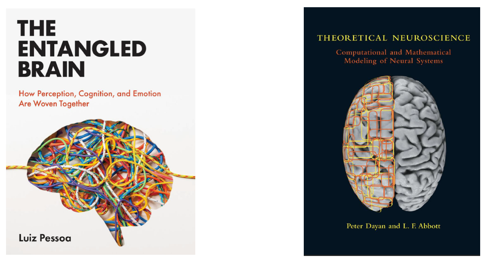

Understanding Brain Networks from a Complex Systems Perspective
Understanding the Brain as a Complex System (2023-09-05 ~ 2023-11-28)
Room: 500-304 | Tuesdays 17:00 ~ 19:50 | Syllabus
Speakers: Ziseok Lee, Yunseo Chang, and Taehoon Kim
The seminar is about how we can think about the brain as a highly complex network system
- Orientation and Understanding the Anatomical Architecture of the Brain (2023-09-05)
- The Minimal Brain + Cognition (2023-09-12)
- Emotion and Motivation from a Neuroscience Perspective (2023-09-19)
- Emotion and Fear from a Neuroscience Perspective (2023-09-26)
- Complex Systems and Midterm Review (2023-10-10)
- The Hodgkin-Huxley Model (2023-10-31)
- NEURON Coding Practice (2023-11-07)
- Entropy, Mutual Information, and Spike Trains (2023-11-14)
- Network Theory and Brain Networks (2023-11-21)
- Student Independent Presentations (2023-11-28)
# In the first half of the seminar, we critically examine the reductionist perspective—which attempts a one-to-one mapping of brain regions to discrete functions—and its limitations, introducing a complex systems framework.
We introduce the overall trajectory of the seminar and gain a foundational understanding of the brain's anatomical architecture.
Reference : The Entangled Brain Ch.2
Lecture Materials :
OT,
Anatomy of the Brain,
Session 1. Anatomical Architecture of the Brain,
Quiz 1
We explore the brain's input and output circuits through the 'minimal brain' concept, conduct cognitive experiments, and investigate cognition as it unfolds in the prefrontal cortex. Additionally, we briefly introduce brain network analysis techniques.
Reference : The Entangled Brain Ch.3, 7
Lecture Materials :
Minimal Brain,
Cognition,
Quiz 2
Online Experiments : Wisconsin Card Sorting,
Stroop Task
We examine the relationships between the autonomic nervous system and the hypothalamus, fear and the amygdala, and motivation and the midbrain. We also explore temporal difference learning, a basic reinforcement learning algorithm.
Reference : The Entangled Brain Ch.5, Theoretical Neuroscience Ch.9
Lecture Materials :
Emotion (Part 1),
Quiz 3
We study how the cingulate gyrus, insula, and orbitofrontal cortex dynamically interact with other regions to weave together emotional states. As a specific example, we examine fear extinction. We also explore nonlinear systems described by simple ordinary differential equations.
Reference : The Entangled Brain Ch.6, 11
Lecture Materials :
Emotion (Part 2),
Unlearning Fear,
Matlab Simulation
By introducing the history of complex systems science, we naturally guide a paradigm shift in students' thinking. We provide a brief overview of complex systems and discuss their ongoing application in neuroscience.
Reference : The Entangled Brain Ch.12, Chaos (James Gleick, 1987)
Lecture Materials :
Complex System,
Quiz 5
# In the second half of the seminar, we start from the level of single neurons to learn the mathematical modeling of brain networks, accompanied by practical coding exercises.
We introduce biological examples of single neurons alongside the Hodgkin-Huxley model.
Reference : Theoretical Neuroscience Ch.7
Lecture Materials :
Hodgkin-Huxley Model,
Quiz 6
After implementing the Hodgkin-Huxley model through code, we extend the model. Practical exercises are conducted utilizing the Python NEURON library.
Reference : Theoretical Neuroscience, Differential Equations, Dynamical Systems, and an Introduction to Chaos
Lecture Materials :
Numerical Methods,
HH Model Simulation
We study entropy, mutual information, and spike trains. Applying the concept of information entropy, we understand how information is transferred between neurons via spike trains.
Reference : Theoretical Neuroscience Ch.4
Lecture Materials :
Entropy and Spike Trains,
(Supplement) Information Theory,
Quiz 8
We learn the foundational principles of network theory and examine the topological characteristics of brain networks.
Reference : Networks: An Introduction Part 2 (Newman, 2010), The Entangled Brain Ch.10
Lecture Materials :
Network Theory and Brain Network,
Quiz 9
Student presentations are conducted based on class votes for the individual reports they wish to hear. The reports are written by delving deeper into the topics that left the most profound impression on each student during the course.
Reference : Preparation for Personal Essay/Independent Presentation
Textbooks and References
- Pessoa, L. (2022). The Entangled Brain: How Perception, Cognition, and Emotion Are Woven Together. United States: MIT Press.
- Abbott, L. F., Dayan, P. (2005). Theoretical Neuroscience: Computational and Mathematical Modeling of Neural Systems. United States: MIT Press.
- Newman, Mark (2010). Networks: An Introduction. Oxford, New York: Oxford University Press.